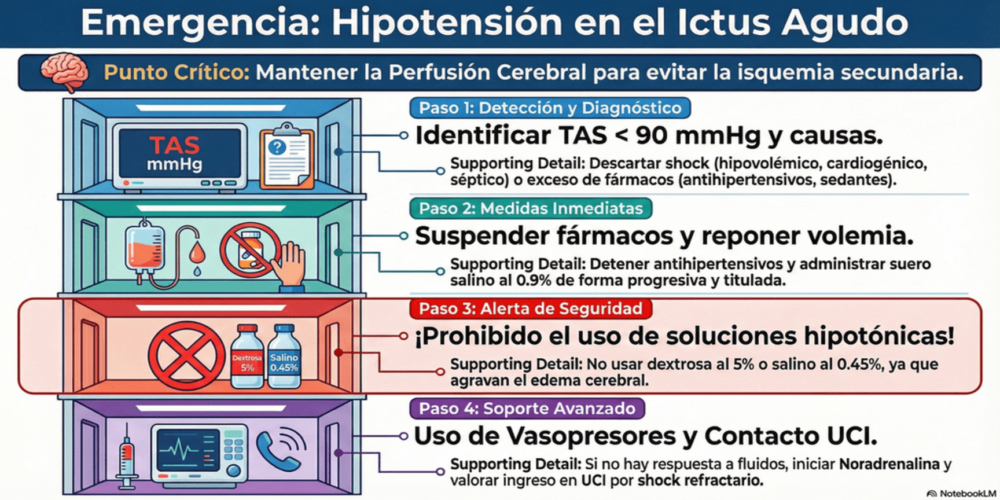

Aunque la hipotensión arterial es menos frecuente que la hipertensión en la fase aguda del ictus, es una complicación grave que puede comprometer la perfusión cerebral y el pronóstico. Su aparición requiere una búsqueda activa de la causa subyacente.
Detección y causas a descartar
Ante la aparición de hipotensión (TA sistólica < 90 mmHg), se debe realizar un diagnóstico diferencial de emergencia:
- Causas asociadas al ictus: inestabilidad vasomotora, bradicardia severa.
- Causas de shock:
- Hipovolémico/Hemorrágico: deshidratación, falta de ingesta, hemorragia digestiva, hemorragias internas.
- Cardiogénico/Obstructivo: infarto agudo de miocardio, embolia pulmonar masiva, disección aórtica.
- Séptico: infección severa (p. ej., neumonía, infección urinaria).
- Causas farmacológicas:
- Antihipertensivos: exceso de dosis o efecto prolongado de fármacos como betabloqueantes, IECA, ARA-II o diuréticos.
- Sedantes y antipsicóticos: benzodiacepinas, opioides, neurolépticos (p. ej., clorpromazina).
- Otros fármacos: algunos antiarrítmicos y vasodilatadores.
Manejo inmediato
El objetivo es corregir la causa de la hipotensión y mantener los niveles de perfusión sistémica necesarios para evitar la isquemia cerebral secundaria. Se aplicará el siguiente enfoque escalonado.
- Suspender tratamientos hipotensores: Detener
inmediatamente la administración de cualquier fármaco
antihipertensivo en curso.
-
Corregir la volemia:
-
Administrar de forma cuidadosa soluciones intravenosas isotónicas (preferiblemente suero salino al 0,9%) vigilando la respuesta para restaurar el volumen circulante. No hay datos que guíen un volumen fijo exacto, por lo que la reposición debe ser titulada y progresiva.
- ¡Precaución!: Evitar el uso de soluciones hipotónicas (como dextrosa al 5% o suero salino al 0,45%), ya que su aporte de agua libre puede exacerbar el edema cerebral isquémico.
-
-
Medidas no farmacológicas: Aplicar maniobras posturales para intentar elevar la tensión arterial o mejorar el flujo sanguíneo cerebral antes de recurrir a fármacos.
-
Optimizar el gasto cardíaco: Si la hipotensión no responde al aporte de fluidos y medidas físicas, el tratamiento de elección es el uso cuidadoso de un fármaco vasopresor (como noradrenalina). Esto exige una estrecha monitorización de los valores de presión arterial.
La hipotensión refractaria a las medidas
iniciales es un signo claro de shock.
Se debe detener el deterioro y contactar de forma emergente con UCI para valorar el ingreso y continuar el soporte hemodinámico avanzado.
Volver al índice Se debe detener el deterioro y contactar de forma emergente con UCI para valorar el ingreso y continuar el soporte hemodinámico avanzado.